Jury Theorems
POLS 3220: How to Predict the Future
Warmup
Warmup
Warmup
Ponder: What if I asked the class to vote on the answers? How many correct answers do you think the majority would get?
Warmup

Warmup
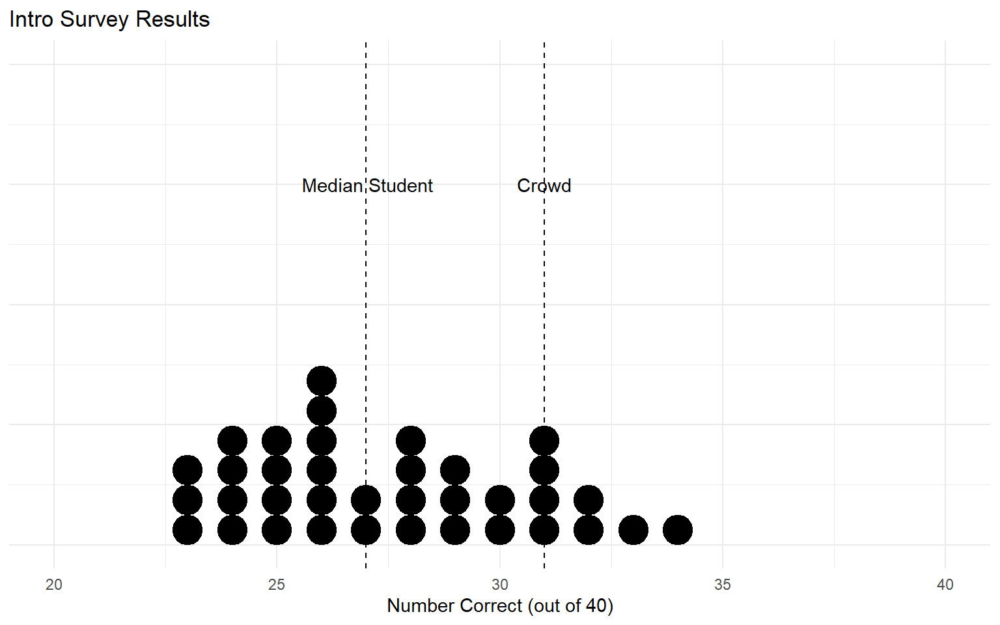Warmup
Ponder: What if I only took the majority vote of students who were really confident in their answers (>95%)? Would that result be better or worse?
Warmup
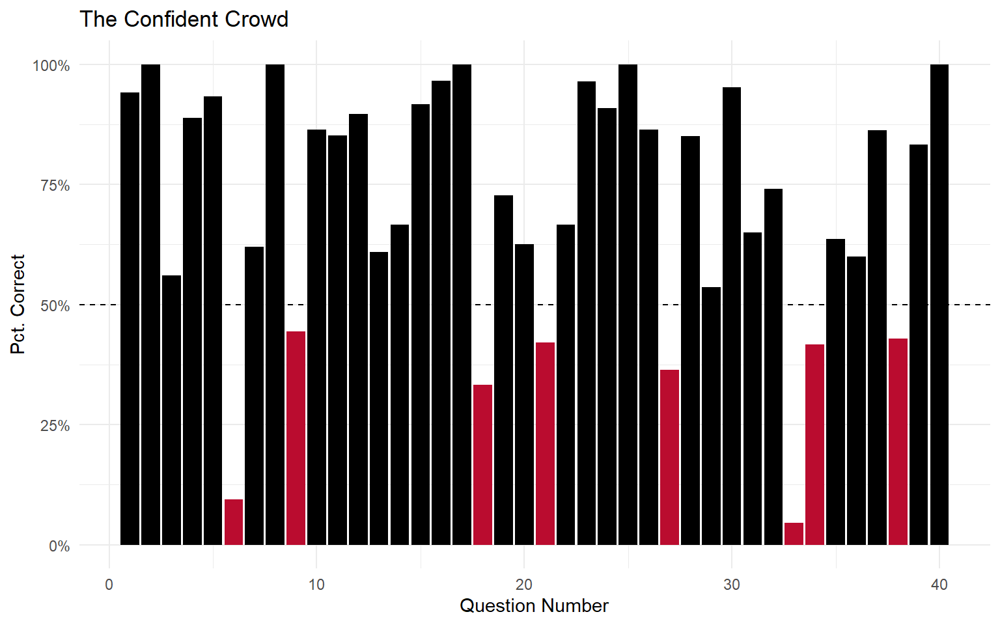Warmup
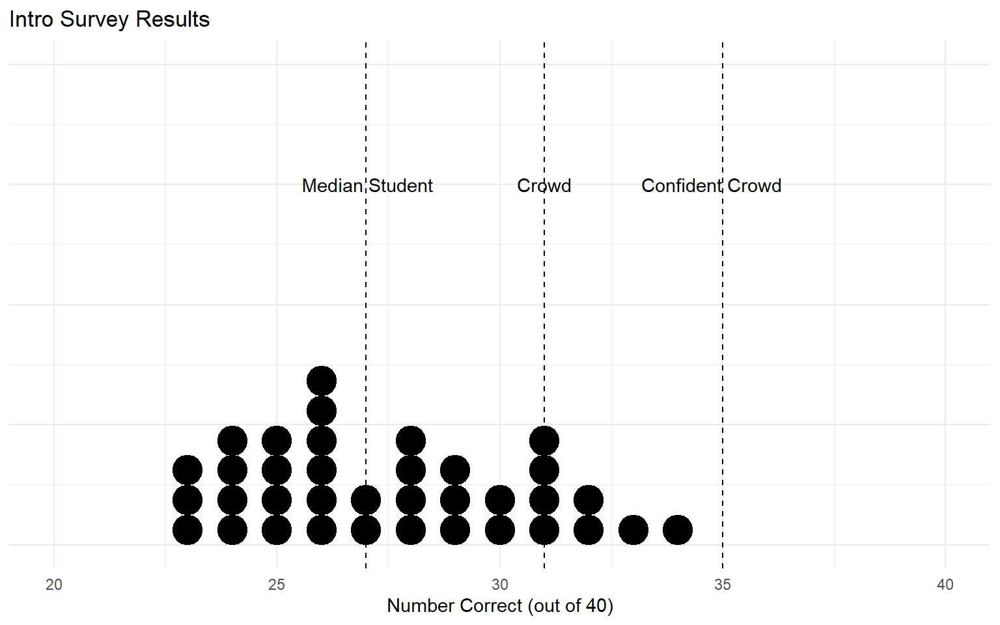Wisdom of Crowds
This phenomenon is known as the Wisdom of Crowds.
- Groups of people often outperform the individuals that make them up.
Over the next few weeks, we’ll discuss how to harness the Wisdom of Crowds to make better predictions.
We’ll also explore the conditions under which groups of people perform worse than individuals (the Madness of Crowds).
Marquis de Condorcet (1743-1794)
Condorcet Jury Theorem
Assumptions:
A group is voting on a binary (Yes/No) decision.
Each voter has probability \(p > \frac{1}{2}\) of making the correct choice.
Individual votes are independent of one another.
Theorem:
As the size of the group \(n\) gets large:
- The probability that the majority makes the correct choice approaches 100%.
Condorcet Jury Theorem
Ponder: Does the Condorcet Jury Theorem remind you of anything?
Condorcet Jury Theorem
Example: A jury with 5 members, where each individual has a 60% probability of choosing the right answer.
Condorcet Jury Theorem
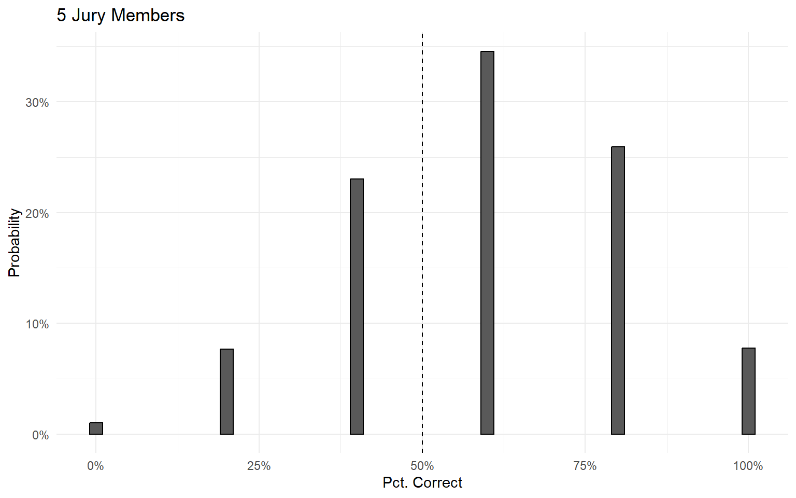Condorcet Jury Theorem
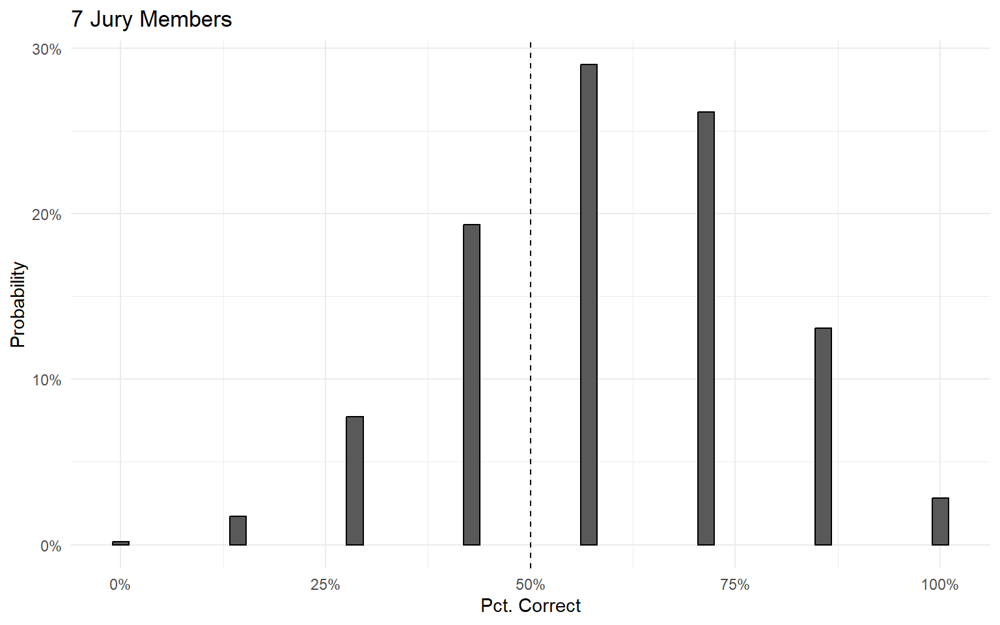Condorcet Jury Theorem
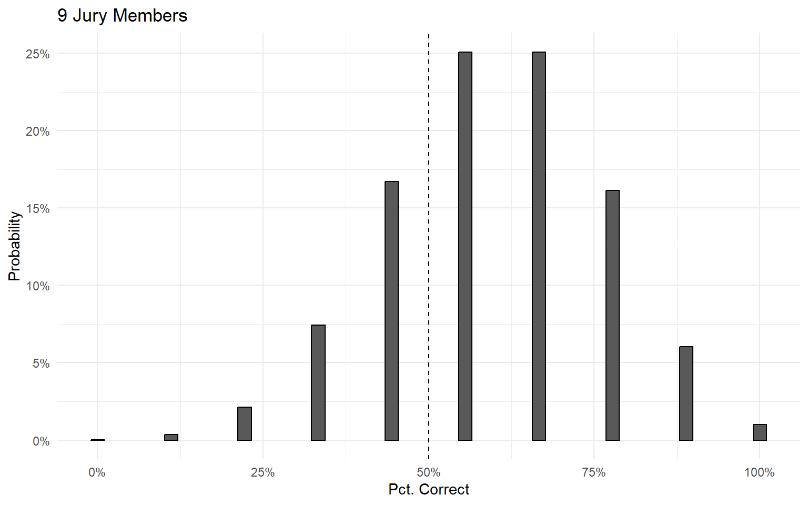Condorcet Jury Theorem
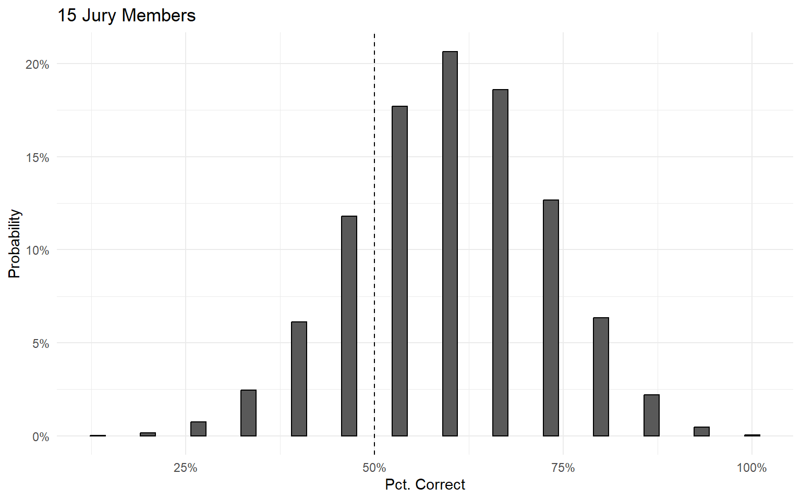Condorcet Jury Theorem
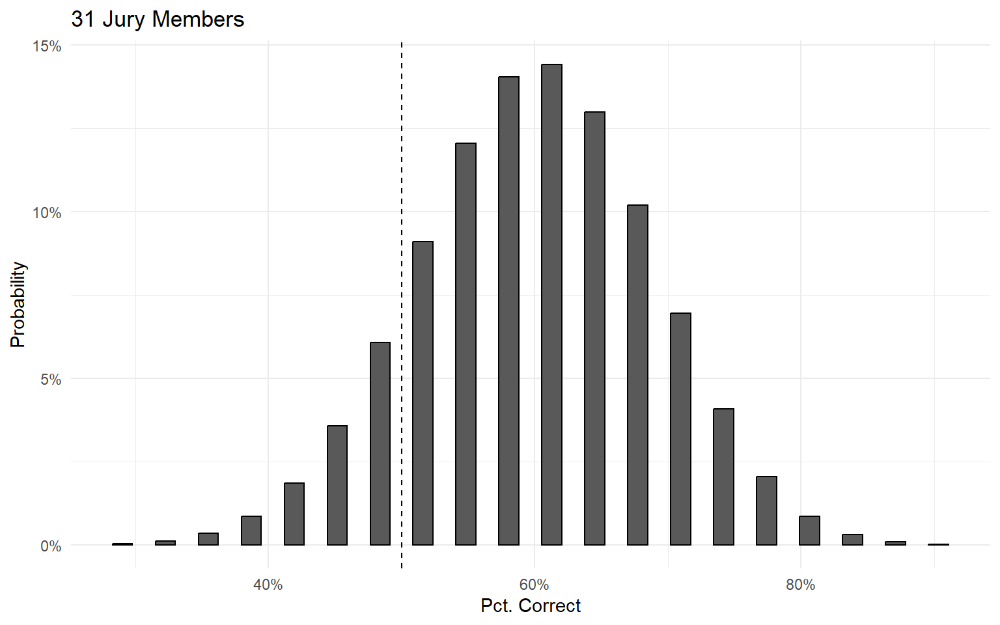Condorcet Jury Theorem
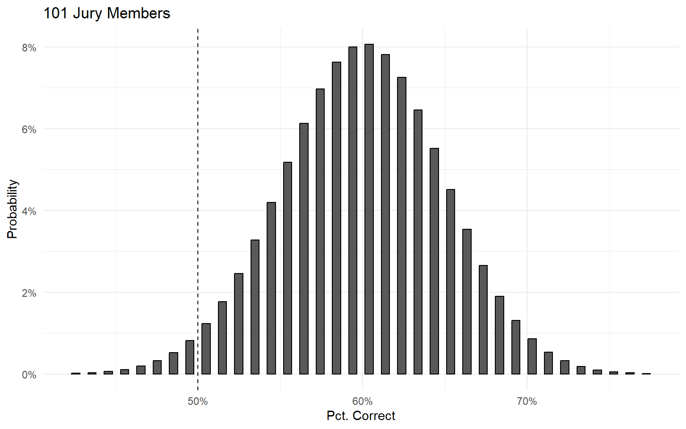Condorcet Jury Theorem
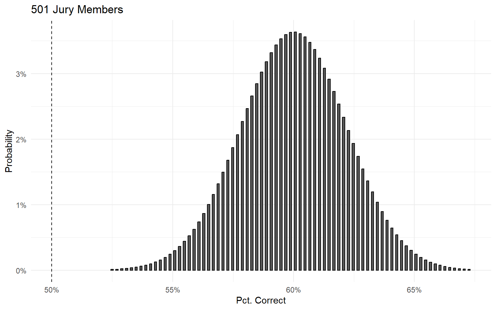Condorcet Jury Theorem
Majority rule is a powerful method for finding the right answer, if:
- Individuals are competent \((p > \frac{1}{2})\).
- Choices are made independently.
- The group is large enough.
Wisdom of Crowds
One last wrinkle: what if the decision being made isn’t binary (Yes/No)?
What if the group is trying to make a decision about a continuous value?
Consider the ox weight-judging competition described in Tetlock Chapter 3.
Participants paid sixpence to enter a competition to guess the weight of a “fat ox” (Galton 1907).
Wisdom of Crowds
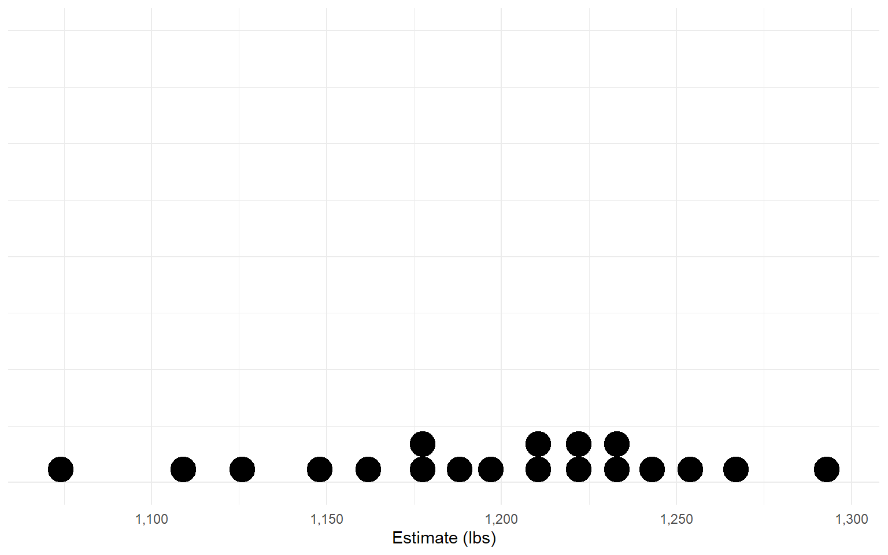What is the “majority judgment” here?
Wisdom of Crowds
Imagine we broke this down into a series of binary (Yes/No) votes.
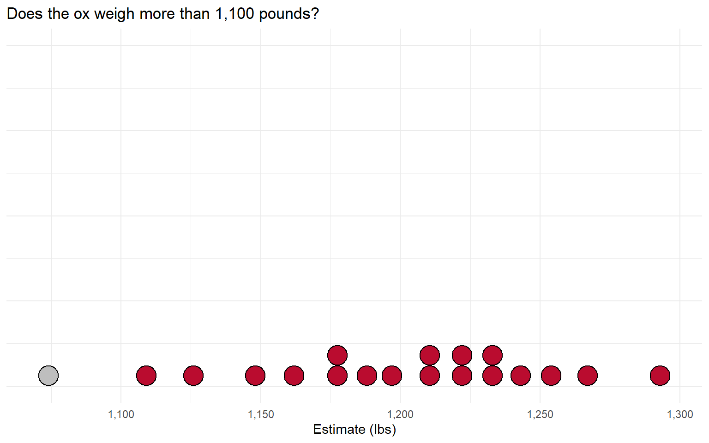Wisdom of Crowds
If the majority says “it weighs more than that”, adjust the question higher:
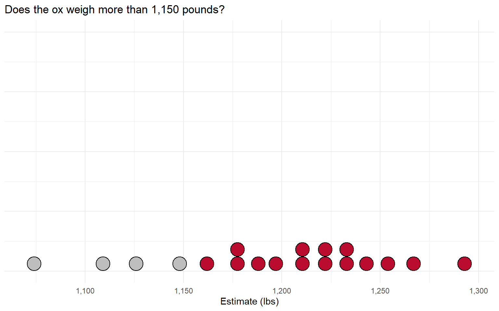Wisdom of Crowds
If the majority says “it weighs less than that”, adjust the question lower:
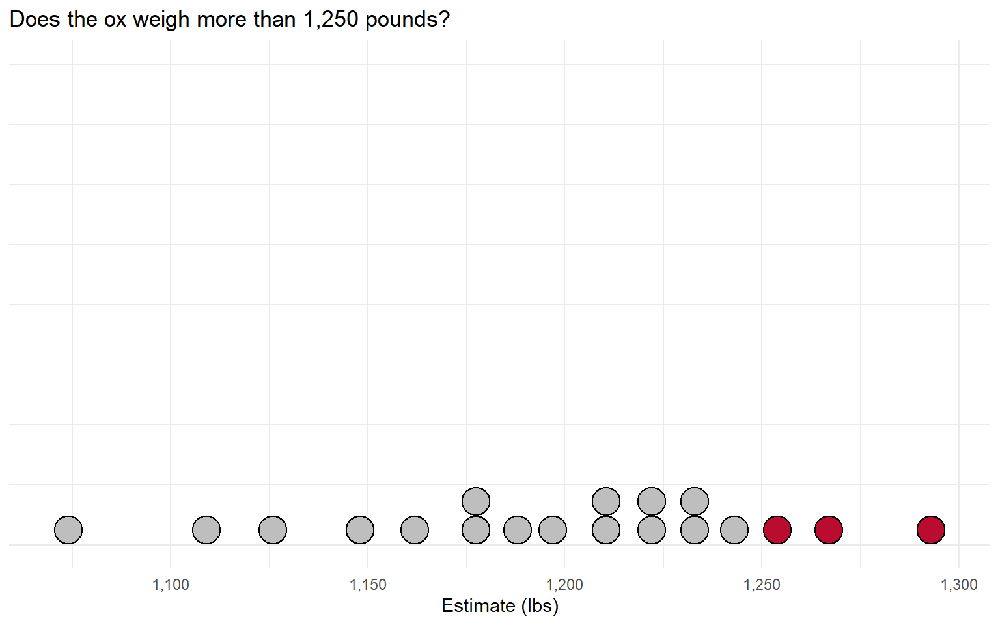Wisdom of Crowds
This process will finally stop when we get to the median voter (Black 1948).
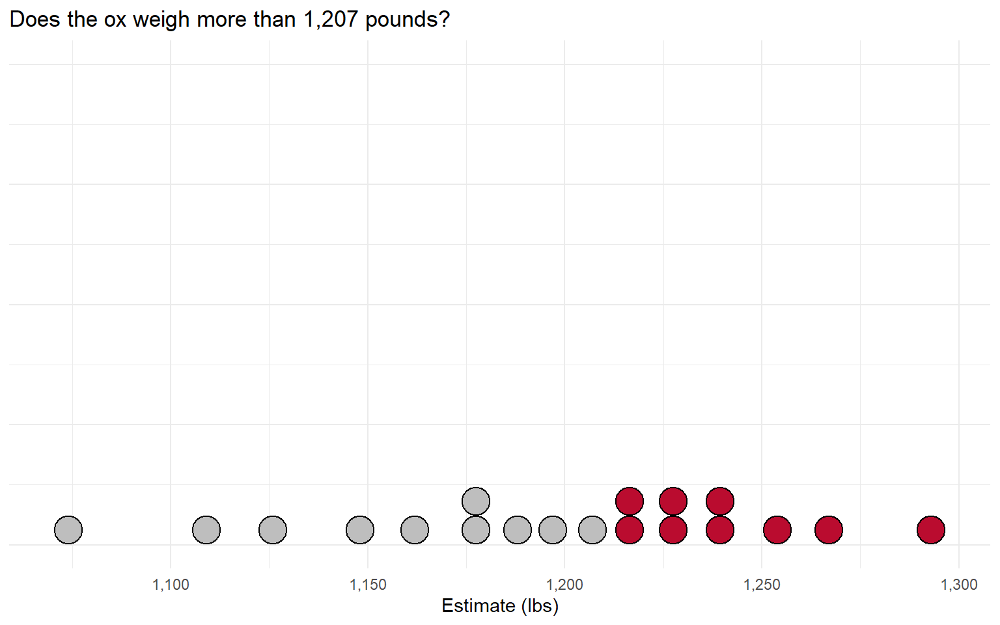Wisdom of Crowds
In Galton’s experiment, the median voter was off by only 9 pounds!
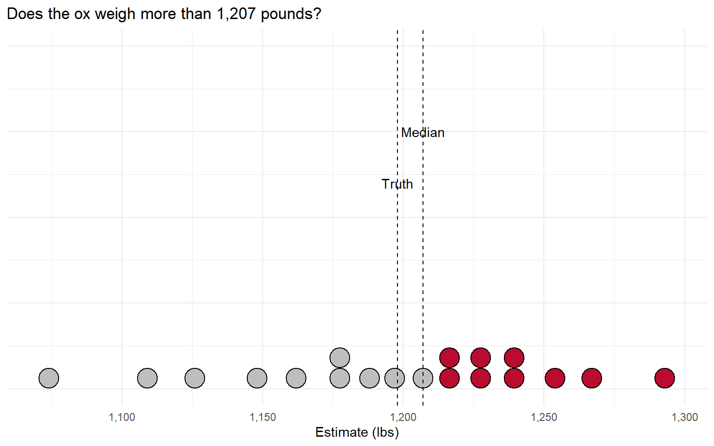Median Voter Theorem
The median voter theorem (Black 1948) says that the median is the only position that cannot be defeated by a majority vote.
This follows from the definition of the median:
50% of the group lies to the right.
50% of the group lies to the left.
Any majority voting bloc (>50%) must include the median.
So we can think of the “majority judgment” as the position of the median voter.
Takeaways
The Condorcet Jury Theorem shows when we can expect majority rule to yield good judgments.
- Individuals must be competent/independent, and you need a large group.
The median voter theorem says that, when you’re making judgments on a continuous spectrum, majority = median.
- This is why the “Crowd” point on our course website is the median forecast.
Next Time: What to do when we don’t quite believe that independence assumption…
References
Black, Duncan. 1948. “On the Rationale of Group Decision-Making.” Journal of Political Economy 56 (1): 23–34. https://doi.org/10.1086/256633.
Galton, Francis. 1907. “Vox Populi.” Nature 75 (1949): 450–51. https://doi.org/10.1038/075450a0.